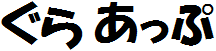

Gura プログラミング言語を使ったフリーソフトを公開
ニュース
2014-06-18
このサイトを開設しました。
フリーソフト一覧
おうちで証明写真 Gura Shot
免許証の申請やら履歴書やらで、証明写真がほしいときは意外と多いもの。 Gura Shot は、デジカメの画像から必要なサイズの証明写真をカンタンに作れるアプリケーションです。
Copyright (C) 2014
ypsitau